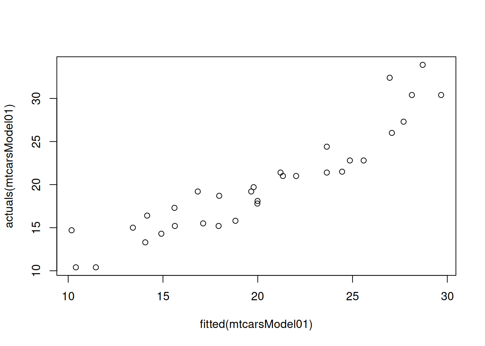

10.1 Dummy variables for the intercept
As we remember from Section 1.2, the variables in categorical scale do not have distance or natural zero. This means that if we encode the values in numbers (e.g. “red” - “1,” “green” - “2,” “blue” - “3”), then these numbers will not have any proper mathematical meaning - they will only represent specific values (and order in case of ordinal scale), but we would be limited in operations with these values. In order to overcome this limitation, we could create a set of dummy variables, each of which would be equal to one if the value of the original variable is equal to a specific value and zero otherwise. Consider the example with colours, where we have three types of t-shirts to sell:
- Red,
- Green,
- Blue.
Every t-shirt in our dataset would have one of these colours, and based on this we could create three dummy variables:
- colourRed, which would be equal to one if the t-shirt is Red and zero otherwise,
- colourGreen: 1 if the t-shirt is Green and 0 otherwise,
- colourBlue: 1 if the t-shirt is Blue and 0 otherwise.
These dummy variables can then be added to a model instead of the original variable colour, resulting, for example, in the model: \[\begin{equation} sales_j = \beta_0 + \beta_1 price_j + \beta_2 colourRed_j + \beta_3 colourGreen_j + \epsilon_j . \tag{10.1} \end{equation}\] Notice that I have only included two dummy variables out of the three. This is because we do not need to have all of them to be able to say what colour of t-shirt we have: if it is not Red and not Green, then it must be Blue. Furthermore, while some models and estimation methods could handle all the dummy variables in the model, the linear regression cannot be estimated via the conventional methods if they are all in. This is exactly because of this situation with “not Red, not Green.” If we introduce all three, the model will have so called “dummy variables trap,” implying perfect multicollinearity (see Subsection 12.3), because of the functional relation between variables: \[\begin{equation} colourBlue_j = 1 - colourRed_j - colourGreen_j \text{ for all } j=1, \dots, n . \tag{10.2} \end{equation}\] This is a general rule: if you have created a set of dummy variables from a categorical one, then one of them needs to be dropped, in order not to have the dummy variables trap.
So, what does the inclusion of dummy variables in the regression model means? We can see that on the following example of artificial data:
tShirts <- cbind(rnorm(150,20,2),0,0,0)
tShirts[1:50,2] <- 1
tShirts[1:50+50,3] <- 1
tShirts[1:50+50*2,4] <- 1
tShirts <- cbind(1000 + tShirts %*% c(-2.5, 30, -20, 50) + rnorm(150,0,5), tShirts)
colnames(tShirts) <- c("sales","price","colourRed","colourGreen","colourBlue")We can produce spread plot to see how the data looks like:
spread(tShirts)Figure 10.1: Spread plot of t-shirts data.
Figure @red(fig:tShirtsSpread) demonstrates that the sales differ depending on the type of colour (the boxplots). The scatterplot between sales and price is not very clear, but there are actually three theoretical lines on that plot. We can enlarge the plot and draw them:
plot(tShirts[,2:1])
abline(a=1000+30, b=-2.5, col="red")
abline(a=1000-20, b=-2.5, col="green")
abline(a=1000+50, b=-2.5, col="blue")Figure 10.2: Scatterplot of Sales vs Price of t-shirts of different colour.
Now, if we want to construct the regression that would take these differences into account, we need to estimate the model (10.1):
tShirtsALM <- alm(sales~price+colourRed+colourGreen, tShirts, loss="MSE")
summary(tShirtsALM)## Response variable: sales
## Distribution used in the estimation: Normal
## Loss function used in estimation: MSE
## Coefficients:
## Estimate Std. Error Lower 2.5% Upper 97.5%
## (Intercept) 1046.5790 4.4565 1037.7713 1055.3867 *
## price -2.2688 0.2173 -2.6982 -1.8394 *
## colourRed -21.3109 1.1008 -23.4864 -19.1353 *
## colourGreen -71.2914 1.1009 -73.4671 -69.1157 *
##
## Error standard deviation: 5.5033
## Sample size: 150
## Number of estimated parameters: 4
## Number of degrees of freedom: 146
## Information criteria:
## AIC AICc BIC BICc
## 941.2307 941.5066 953.2733 953.9644Notice that the intercept in this model is not 1000, as we used in the generation of the data, but is 1047. This is because it now also contains the effect of blue colour on sales in it. So, the sales of blue coloured t-shirt is now the baseline category, and each dummy variable now represents the shifts of sales, when we switch from one colour to another. For example, we can say that the sales of red colour t-shirt are on average lower than the sales of the blue one by approximately 21 units. What dummy variables do in the model is just shift the line from one level to another. This becomes clear if we consider special cases of models for the three t-shirts:
- For the blue t-shirt, our model is: sales=1046.58-2.27price+et. This is because both
colourRedandcolourGreenare zero in this case; - For the red t-shirt the model is: sales=1046.58+-21.31-2.27price+et or sales=1025.27-2.27price+et;
- Finally, for the green one, the model is: sales=1046.58+-71.29-2.27price+et or sales=975.29-2.27price+et.
In a way, we could have constructed three different regression models for the sub-samples of data, and in the ideal situation (all the data in the world) we would get the same set of estimates of parameters. However, this would be a costly procedure from the statistical perspective, because three separate models will have lower number of degrees of freedom, then the model with dummy variables. Thus, the estimates of parameters will be more uncertain in those three models than in one model tShirtsALM.
One thing that we can remark is that the estimated parameters differ from the ones we used in the data generation. This is because the intercepts of the three models above intersect the y-axis in the points 1046.58, 1025.27 and 975.29 respectively. Furthermore, in general it is not possible to extract the specific effect of blue colour on sales based on the estimates of parameters, unless we impose some restrictions on parameters. The closest we can get to the true parameters is if we normalise them (assuming that there is some baseline and that the colours build upon it and add up to zero):
colourParameters <- c(coef(tShirtsALM)[3:4]+coef(tShirtsALM)[1],coef(tShirtsALM)[1])
names(colourParameters)[3] <- "colourBlue";
colourParameters - mean(colourParameters)## colourRed colourGreen colourBlue
## 9.556554 -40.423972 30.867417The meaning of these effects is that on average they change the baseline sales of colourless t-shirts according to these values. For example, the specific increase of sales due to the red colour of t-shirt is 10 units. In general, it is not worth bothering with these specific effects, and we can just stick with parameters of model, keeping in mind that we only have effects comparative to the selected baseline category.
In R, we can also work with factor variables, without a need to expand variables in a set of dummies - the program will do the expansion automatically and drop the first level of the variable. In order to see how it works, we create a data frame with the factor variable colour:
tShirtsDataFrame <- as.data.frame(tShirts[,1:2])
tShirtsDataFrame$colour <- factor(c("Red","Green","Blue")[tShirts[,3:5] %*% c(1:3)])
spread(tShirtsDataFrame)
Notice that the “Blue” was automatically set as the first level, because factor() function would sort labels alphabetically unless the levels are provided explicitly. The estimated model in this case will be exactly the same as the tShirts model above:
tShirtsDataFrameALM <- alm(sales~price+colour, tShirtsDataFrame, loss="MSE")
summary(tShirtsDataFrameALM)## Response variable: sales
## Distribution used in the estimation: Normal
## Loss function used in estimation: MSE
## Coefficients:
## Estimate Std. Error Lower 2.5% Upper 97.5%
## (Intercept) 1046.5790 4.4565 1037.7713 1055.3867 *
## price -2.2688 0.2173 -2.6982 -1.8394 *
## colourGreen -71.2914 1.1009 -73.4671 -69.1157 *
## colourRed -21.3109 1.1008 -23.4864 -19.1353 *
##
## Error standard deviation: 5.5033
## Sample size: 150
## Number of estimated parameters: 4
## Number of degrees of freedom: 146
## Information criteria:
## AIC AICc BIC BICc
## 941.2307 941.5066 953.2733 953.9644Finally, it is recommended in general not to drop dummy variables one by one, if for some reason you decide that some of them are not helping. If, for example, we decide not to include colourRed and only have the model with colourGreen, then the meaning of the dummy variables will change - we will not be able to distinguish the Blue from Red. Furthermore, while some dummy variables might not seem important (or significant) in regression, their combination might be improving the model, and dropping some of them might be damaging for the model in terms of its predictive power. So, it is more common either to include all levels (but one) of categorical variable or not to include any of them.